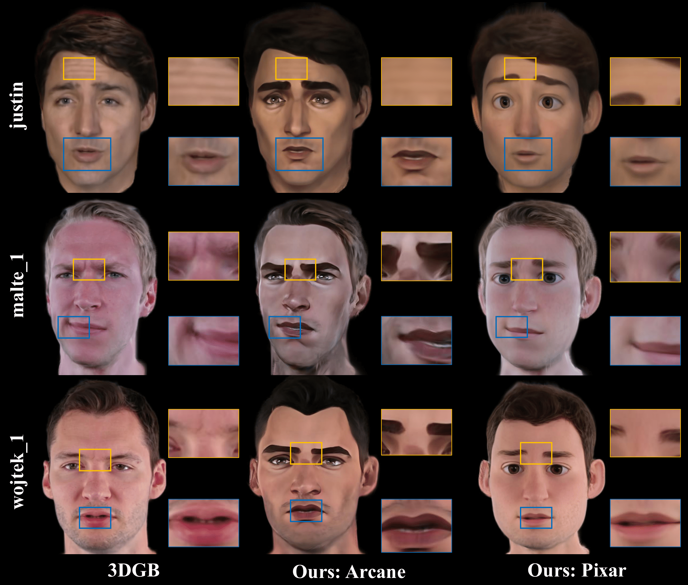

Graphs (top) and table (bottom) compare the average-score metric (ASM) with respect to the total training and inference times among [Suh et al. 2022], [Ju et al. 2024], and the proposed MFE-GAN, evaluated on the Benchmark dataset using NVIDIA GeForce RTX 4090 GPUs. The proposed MFE-GAN, employing U-Net & EfficientNetV2-S as the generator backbone, achieves 16%–79% faster training and 17%–35% shorter inference times compared to the existing methods.
Abstract
Document image enhancement and binarization are commonly performed before document analysis and recognition tasks to improve the efficiency and accuracy of techniques such as optical character recognition (OCR). This is because directly recognizing text in degraded documents, particularly in color images, often obtains unsatisfactory results. Training independent generative adversarial networks (GANs) for each color channel can generate images where shadows and noise are effectively removed, which in turn facilitates efficient text information extraction. However, employing multiple GANs for different color channels requires long training and inference times. To reduce both training and inference times of models for document image enhancement and binarization, we propose MFE-GAN, an efficient GAN-based framework with multi-scale feature extraction (MFE), which incorporates Haar wavelet transformation (HWT) and normalization to process document images before feeding them into GANs for training. In addition, we present novel generators, discriminators, and loss functions to improve the model's performance, and conduct ablation studies to demonstrate their effectiveness. Experimental results on the Benchmark, Nabuco, and CMATERdb datasets show that the proposed MFE-GAN significantly reduces both the total training and inference times while maintaining comparable performance in comparison to state-of-the-art methods.
Live Demo
Pipeline
Our ToonifyGB framework consists of two stages: Stage 1 involves the generation of stylized videos, and Stage 2 focuses on the synthesis of 3D stylized head avatars using Gaussian blendshapes.
Comparison
We present the original video head frames, the corresponding stylized video frames generated by our method, and the 3D stylized head avatars synthesized using Gaussian blendshapes.


Our method effectively captures and preserves high-frequency details in the stylized videos. Compared to the SOTA method, ToonifyGB can synthesize 3D stylized head avatars with comparable quality and detail.